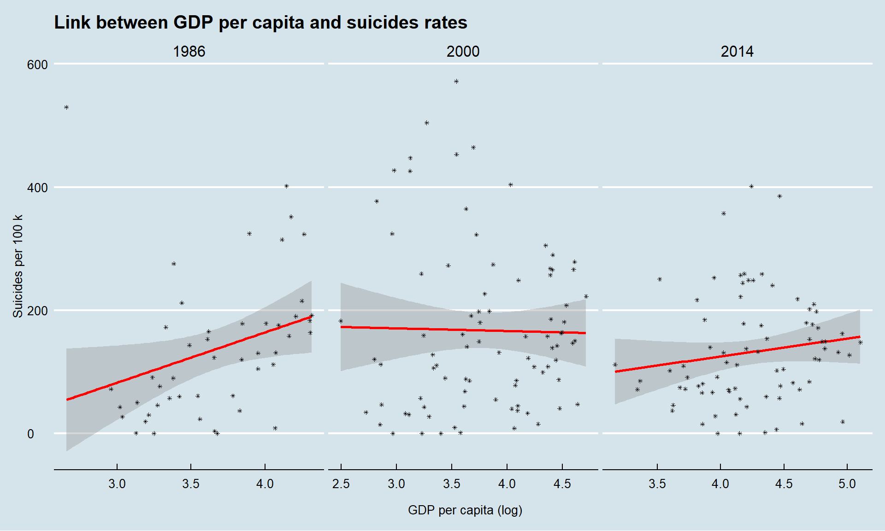
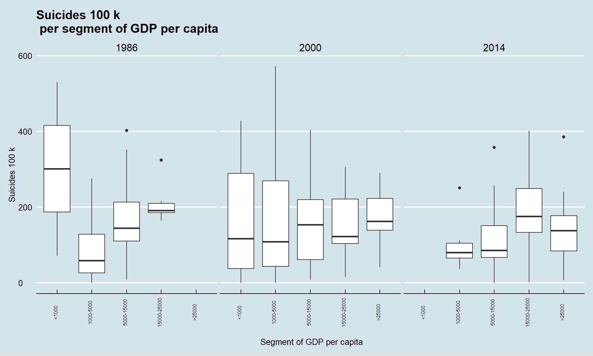

5 Link between wealth and suicide
Is there any link between how rich a country is and how high is the suicide rate?
data <- suicide %>% group_by(country, year) %>%
summarize(nb = n(), pop = sum(population), suicide_100k = sum(suicides.100k.pop),
gdp = sum(gdp), real_gdp = gdp/nb, gdp_per_capita = real_gdp/pop)
highchart() %>% hc_title(text = "Scatter plot of suicide rate and GDP per capita in 1986") %>%
hc_add_series(data %>% filter(year == 1986), name = '1986', type = "scatter",
hcaes(x = gdp_per_capita, y = suicide_100k))Let’s use ggplot2 to estimate a linear trend between the two variables for three periods of time.

There is a change of trend over time. In 1986 the relationship between suicide numbers and national wealth per capita seems to be positive and growing. In 2000 this same relationship becomes slightly decreasing and it seems to increase a little bit in 2014.
The linear relationship is not clearly stated.
To further explore this relationship, segment GDP per capita into groups to represent them in a way we can see variability among the group.
comp <- data %>%
mutate(intervalle = cut(gdp_per_capita, breaks = c(0,1000,5000,15000,25000, 200000),
labels = c("<1000", "1000-5000", "5000-15000", "15000-25000",">25000"),
include.lowest = FALSE))